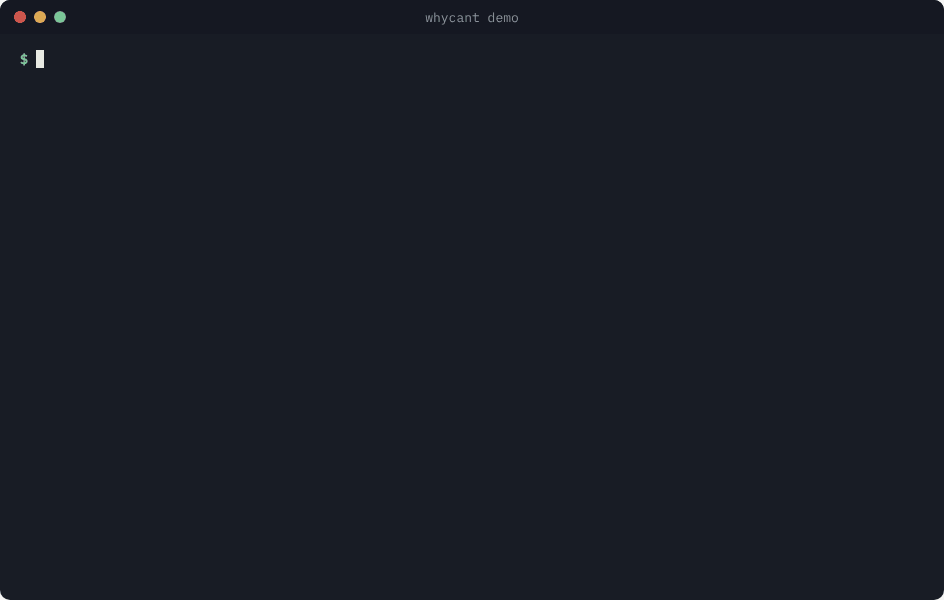

Find out why Linux says “Permission denied”.
whycant checks every folder on the way to a file, exactly the way Linux does. It tells you which folder is locked, why, and the safest way to open it.
Linux tells you
$ cat /srv/demo/team/report.txt cat: /srv/demo/team/report.txt: Permission denied
Which folder? Why? What should I change?
whycant tells you
- Where
- Blocked at the folder
team/ - Why
- bob isn’t in the devs group
- Fix
usermod -aG devs bob
Linux permissions in 30 seconds
Think of every folder as a door, and every file as a locked drawer behind those doors.
Every file has an owner and a group
report.txt might belong to alice and to the devs group (a team of users).
Linux puts you in one box
You are the owner, a group member, or everyone else. Linux checks in that order and uses only the first box that fits you.
Each box has three switches
r read it, w change it, x run it. On a folder, x means you may enter it.
Flip the switches
Turn switches on and off, or type a number, and see what each box may do.
| Who | r read | w change | x run / enter |
|---|---|---|---|
| Owner | |||
| Group | |||
| Everyone else |
Special switches (advanced)
The key idea: to reach a file, you need x (enter) on every folder on the way. One locked door is enough to get “Permission denied”. whycant walks through the doors one by one and shows you the locked one.
Try it: walk to a file as different people
This is a sample folder. Pick a person and watch Linux walk the path to report.txt. Green doors open; the red one is where they get stopped.
bob is a normal user. carol is in the devs group. alice owns report.txt, but its owner switches are all off. root is the administrator.
$ whycant -u bob /srv/demo/team/report.txt
door opensstopped herenever reached
Test yourself
Five quick questions. Guess first, then see how Linux decides.
Build your own path
Have a real “Permission denied”? Recreate it here. Start from an example, then change the user, folders or permissions; the answer updates as you type. Permissions can be numbers (750) or letters (rwxr-x---). Nothing leaves your browser.
Check a real path from your Linux machine, without installing anything
-
On your Linux machine, run this with the path that gives “Permission denied”, then paste the output below.
namei -l /path/to/your/file -
Run
idas the user who gets the error (orid www-datafor a service user) and paste it. -
Choose what they want to do (read, write or run) just below, then:
Everything is read in your browser. Nothing you paste is sent anywhere.
Separate with commas, like www-data, devs
The path, one folder per row. The last row is the file or folder they want.
| Name | Permission | Owner | Group | Remove |
|---|
Check a permission number
Type a mode like 750, 4755 or rw-r--r--. The answer comes live from my chmod calculator API, a Flask app running on Render.
The real tool, in your terminal
On Linux, whycant checks real files on your machine. Here it finds the locked folder, a fix is applied, and then it refuses to help open the password file.

Where
Every folder on the path gets a line. The first[DENY]is the locked door.Why
Which box Linux put you in (owner, group or everyone else) and which switch is off.Fix
Ranked from “just this user” to “everyone”. It never suggestschmod 777.
Install
Project status from GitHub
- Latest version
- v1.1
- Released
- Oct 2026
- Downloads
- —
- Stars
- —
For Linux on x86_64 (Ubuntu 22.04 or newer, Debian 12 or newer). The checksum step proves the file you downloaded is the one that was published.
Download the program and its checksum
wget -N https://github.com/Hennashakil/whycant/releases/latest/download/whycant-linux-x86_64 \ https://github.com/Hennashakil/whycant/releases/latest/download/SHA256SUMSVerify it
You should see
whycant-linux-x86_64: OK. If it saysFAILED, delete the file and don’t run it.sha256sum -c --ignore-missing SHA256SUMSInstall it
chmod +x whycant-linux-x86_64 sudo mv whycant-linux-x86_64 /usr/local/bin/whycant whycant --version
On Debian or Ubuntu? Install the package instead. It also adds the manual (man whycant), and sudo apt remove whycant removes it cleanly. If an older copy is in /usr/local/bin, delete it first (sudo rm /usr/local/bin/whycant), because that folder comes first in your PATH.
wget -N https://github.com/Hennashakil/whycant/releases/download/v1.1/whycant_1.1_amd64.deb \
https://github.com/Hennashakil/whycant/releases/latest/download/SHA256SUMS
sha256sum -c --ignore-missing SHA256SUMS
sudo apt install ./whycant_1.1_amd64.debPrefer to build it yourself? git clone https://github.com/Hennashakil/whycant.git && cd whycant && make && sudo make install
Usage
whycant [OPTION] [PATH]. Both are optional: with no path, it checks the folder you are in.
| Command | Question it answers |
|---|---|
| whycant | Can I read the folder I am in? |
| whycant /etc/hosts | Can I read this file? |
| whycant -w notes.txt | Can I edit it? |
| whycant -x ./backup.sh | Can I run it? |
| whycant -c /opt/myapp | Can I create it here? |
| sudo whycant -u www-data /var/www/html | Can another user reach it? |
| whycant --json -w notes.txt | The same answer as JSON, for scripts |
Exit codes: 0 allowed, 1 denied, 2 error, so scripts can act on the result. Files with a + after their mode have an ACL (extra per-user rules); whycant reads those like the kernel does, including the ACL mask. Full manual: man whycant.
Built to give safe advice
whycant only reads. It never changes a file, and some locks it will not help you open.
Protected files
Password, key and admin files such as /etc/shadow, sudoers, SSH keys and /root get a stop instead of a fix.
Root-level groups
It never suggests joining docker, disk, sudo or similar groups, where membership is as good as root. Raw disks are blocked too.
Root only when needed
It runs as you. If it can’t see further, it prints the exact sudo command, and under sudo it still checks for you, not for root.
More projects
-
chmod calculator
Type a permission like
750or4755and see what each user can do, with red flags for777and setuid. A Flask web app with a JSON API, deployed both natively and as a Docker container.Hosted on a free plan: the first visit after a quiet spell can take about a minute to wake up.
-
network-port-scanner
A multi-threaded TCP port scanner, built for SOC reconnaissance practice.
About me
I’m Henna Shakil, a Computer Science Engineering graduate (2026) from India, moving into cybersecurity.
I learn by building: whycant started while I was reading the source code of GNU mkdir. I practise attack and defence in my own isolated lab, and I only test systems I own or have written permission to test.
- Focus
- Linux security, network enumeration, governance and risk (ISO 27001, NIST)
- Lab
- Kali Linux and Metasploitable on VirtualBox
- Next
- CEH certification and bug bounty programs
- Research
- Heart disease prediction with DenseNet121, IJEETR Vol. 8 (2026), presented at ICETS’26
- Code
- github.com/Hennashakil
Questions and feedback
Found a bug, have an idea, or got stuck? Leave a comment. You sign in with GitHub, and comments live in this project’s GitHub Discussions.